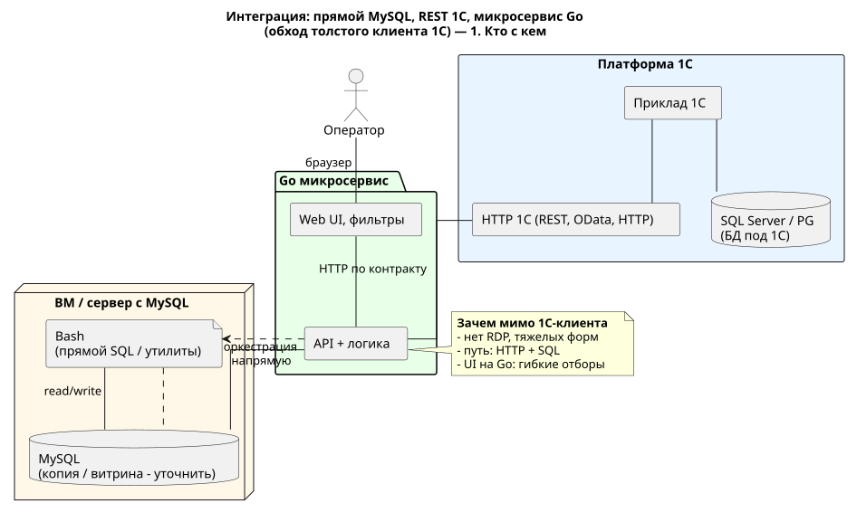
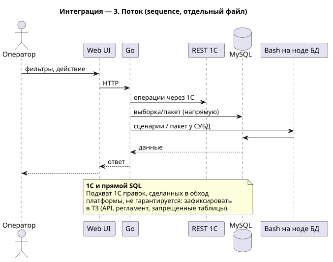

Рассматриваемый контур сочетает кастомный HTTP-слой на стороне 1С (внедрён ранее другими разработчиками; перечень методов, контракт и фактическое состояние — нуждаются в уточнении с программистами) с прямым обращением к MySQL там, где это согласовано с владельцем данных и ИБ. Толстый клиент 1С уходит с критического пути сценариев, где важны время отклика, повторяемость и гибкие отборы в веб-интерфейсе для оператора.
Обеспечить оперативный доступ к данным и операциям по внутренним правилам: операции, которые должны исполняться движком 1С (проводки, статусы, справочники), — через описанный выше HTTP-слой; аналитические выборки, пакетная обработка и обслуживание витрин в MySQL — по прямому подключению к СУБД, при необходимости со сценариями на хосте (bash), чтобы снизить сетевую и операционную задержку.
Микросервис на Go — единая точка входа для веб-интерфейса оператора (фильтры и действия в терминах предметной области) и маршрутизация вызовов: к 1С — когда обязателен движок платформы, к MySQL / bash — когда это допустимо по регламенту. Складывается гибридная модель: целостность учёта и прикладной логики в зоне 1С, скорость и UX тяжёлых сценариев — в специализированном сервисе.
Запись в данные, с которыми работает 1С, в обход её бизнес-логики ведёт к риску рассинхронизации. Допустимый набор операций и таблиц фиксируется в ТЗ; мутации либо через согласованный HTTP-слой 1С, либо по отдельному решению с обратной синхронизацией. Диаграмма sequence задаёт рамку для обсуждения с разработкой, а не заменяет регламент ИБ.
Ниже — схемы (component, две страницы, и sequence). Они иллюстративные; детали контракта с 1С и политика доступа к MySQL уточняются у ответственных разработчиков и владельца ИС.
Участники, каналы и сопоставление путей (толстый клиент 1С, HTTP к 1С, прямой MySQL). Component, вторая страница — сравнение. Sequence — вторая вкладка.
Кастомный слой, вызовы в движок 1С — по согласованному контракту (требует актуализации с разработки).
Прямой доступ к СУБД на ноде, без толстого клиента 1С.
API, бизнес-логика, веб-интерфейс с отборами.

Типовой сценарий: оператор, Go, 1С, MySQL, bash. Отдельный .puml (в одном многостраничном component нельзя сменить тип на sequence).
HTTP
REST и прямые сценарии
